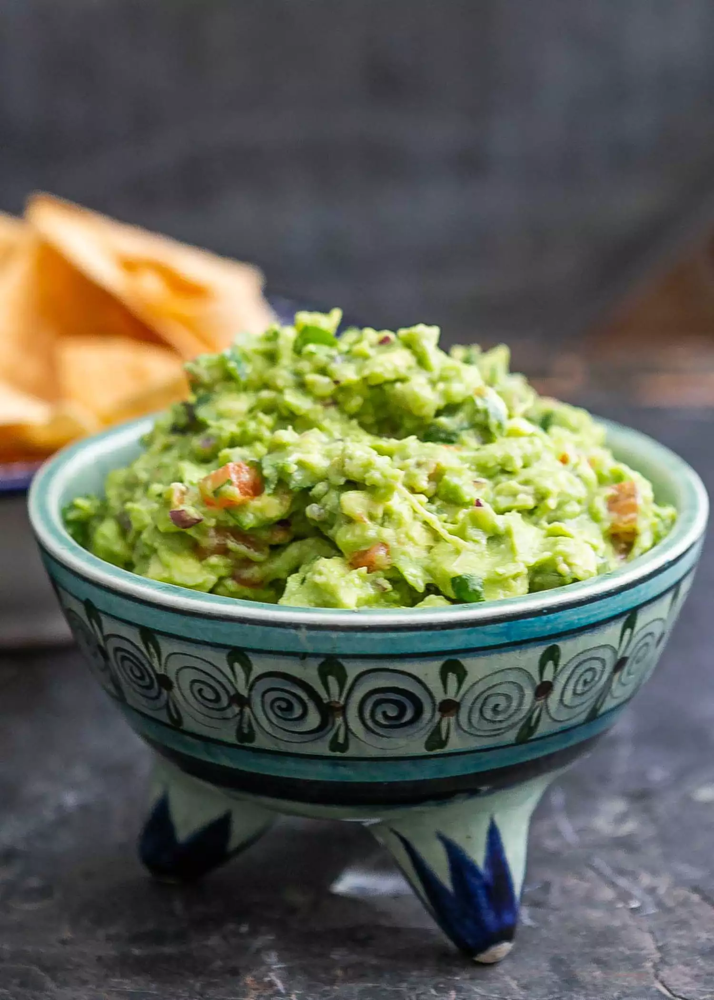

Guacamole

Chunk up the Jams Guacamole
This simple Guacamole recipe is great for any occasion
Ingredients
- 6 Avocados
- 2 Limes
- 1/2 cup Pico De Gallo
- 3 cloves minced garlic
- 1/2 tbs coarse sea salt
Steps
- Scoop all avocado flesh into stainless steel mixing bowl and mash. Leave
some chunks.
- Add pico de gallo and mix well
- add juice from both limes and salt to taste.